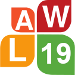

|  |
The 19th Linguistic Annotation Workshop Co-located with ACL 2025 in Vienna, Austria – July/Aug, 2025 |
Addressing Variability in Interlinear Glossed Texts with Linguistic Linked Data
Maxim Ionov and Natalia Patiño Mazzotti
An Annotation Protocol for Diachronic Evaluation of Semantic Drift in Disability Sources
Nitisha Jain, Chiara Di Bonaventura, Albert Merono Penuela and Barbara McGillivray
Annotating candy speech in German YouTube comments
Yulia Clausen and Tatjana Scheffler
Annotating Spatial Descriptions in Literary and Non-Literary Text
Emilie Sitter, Omar Momen, Florian Steig, J. Berenike Herrmann and Sina Zarrieß
Boostrapping UMRs from Universal Dependencies for Scalable Multilingual Annotation
Federica Gamba, Alexis Palmer and Daniel Zeman
Ceating Hierarchical Relations in a Multilingual Event-type Ontology
Zdeňka Urešová, Eva Fučíková and Jan Hajič
Cheap annotation of complex information: A study on the annotation of information status in German TEDx Talks
Carmen Schacht, Tobias Nischk, Oleksandra Yazdanfar and Stefanie Dipper
Classifying TEI Encoding for DutchDraCor with Transformer Models
Florian Debaene and Veronique Hoste
Disagreements in analyses of rhetorical text structure: A new dataset and first analyses
Freya Hewett and Manfred Stede
Enhancing an Annotation Scheme for Clinical Narratives in Portuguese through Human Variation Analysis
Ana Luisa Fernandes, Purificação Silvano, António Leal, Nuno Guimarães, Rita Rb-Silva, Luís Filipe Cunha and Alípio Jorge
Expanding the UNSC Conflicts Corpus by Incorporating Domain Expert Annotations and LLM Experiments
Karolina Zaczynska
ExpLay: A new corpus resource for the research on expertise as an influential factor on language production
Carmen Schacht and Renate Delucchi Danhier
Guideline for Fine-grained Sentence-level Arabic Readability Annotation
Nizar Habash, Hanada Taha-Thomure, Khalid Elmadani, Zeina Zeino and Abdallah Abushmaes
ICLE-RC: Inernational Corpus of Learner English for Relative Clauses
Debopam Das, Izabela Czerniak and Peter Bourgonje
Illuminting Logical Fallacies with the CAMPFIRE Corpus
Austin Blodgett, Claire Bonial, Taylor A. Pellegrin, Melissa Torgbi and Harish Tayyar Madabushi
Label Bias in Symbolic Representation of Meaning
Marie Mikulová, Jan Štěpánek and Jan Hajič
Measuring Label Ambiguity in Subjective Tasks using Predictive Uncertainty Estimation
Richard Alies, Elena Merdjanovska and Alan Akbik
Pe-annotation Matters: A Comparative Study on POS and Dependency Annotation for Alsatian Dialects
Delphine Bernhard, Nathana&euuml;l Beiner and Barbara Hoff
Seond language Korean Universal Dependency treebank v1.3: A semi-automated framework for XPOS-UPOS alignment
Hakyung Sung, Gyu-Ho Shin, Chanyoung Lee, Youkyung Sung and Boo Kyung Jung
Subjectivity in the Annotation of Bridging Anaphora
Lauren Levine and Amir Zeldes
The revision of linguistic annotation in the Universal Dependencies framework: a look at the annotators' behavior
Magali Sanches Duran, Lucelene Lopes and Thiago Alexandre Salgueiro Pardo
Towards Resource-Rich Mizo and Khasi in NLP: Resource Development, Synthetic Data Generation and Model Building
Soumyadip Ghosh, Henry Lalsiam, Dorothy Marbaniang, Gracious Mary Temsen, Rahul Mishra and Parameswari Krishnamurthy
Undestanding Disagreement: An Annotation Study of Sentiment and Emotional Language in Environmental Communication
Christina Barz, Daniel Hanss, Melanie Siegel and Michael Wiegand
Variety delights (sometimes) - Annotation differences in morphologically annotated corpora
Andrea Dömötör, Balázs Indig and Dávid Márk Nemeskey
Visual Representations of Temporal Relations between Events and Time Expressions in News Stories
Evelin Amorim, António Leal, Nana Yu, Purificação Moura Silvano and Alipio Mario Jorge
Where it's at: Annotating Verb Placement Types in Learner Language
Josef Ruppenhofer, Annette Annette Portmann, Christine Renker, Matthias Schwendemann, Katrin Wisniewski and Torsten Zesch